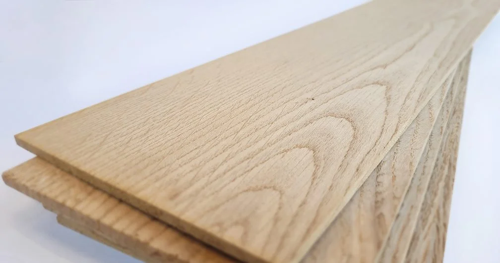
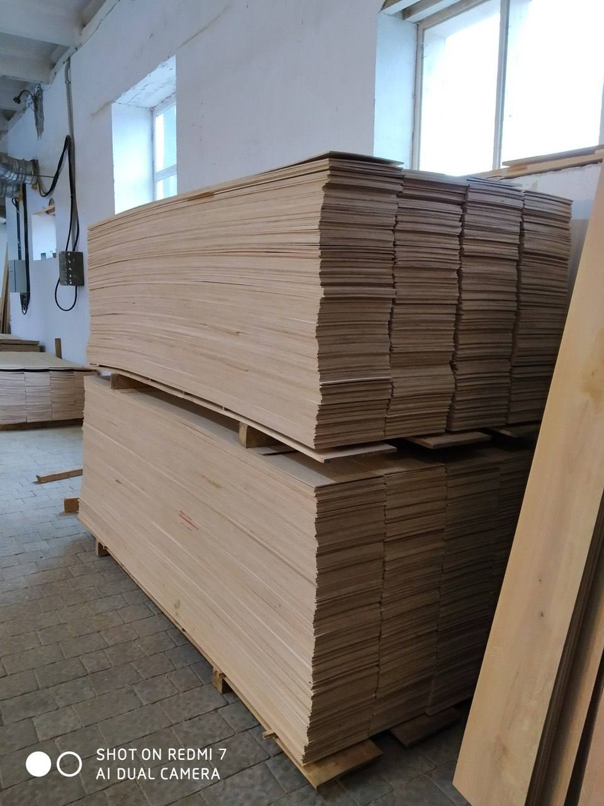

Високоякісна дубова ламель для виробництва паркетної та інженерної дошки. Продукція відзначається точною геометрією, стабільною вологістю та відповідністю сучасним вимогам деревообробної галузі.
Технічні характеристики
| Параметр | Значення |
|---|---|
| Порода деревини | Дуб |
| Вологість | 7 ± 2% |
| Сортність | А, В, C, D |
| Товщина | 3,2 - 4,2 мм* |
| Ширина | 98 - 310 мм* |
| Довжина | 620 – 2420 мм* |
* Параметри можуть змінюватися відповідно до вимог замовника.

Виробництво ламелі включає ретельний відбір дубової сировини, сушіння деревини, механічну обробку та контроль геометричних параметрів на кожному етапі технологічного процесу.
Завдяки сучасному обладнанню та системі контролю якості продукція характеризується стабільними технічними показниками та високою точністю виготовлення.
Готова ламель проходить фінальну перевірку якості, пакується та готується до подальшого використання у виробництві підлогових покриттів.
← Повернутися на головну